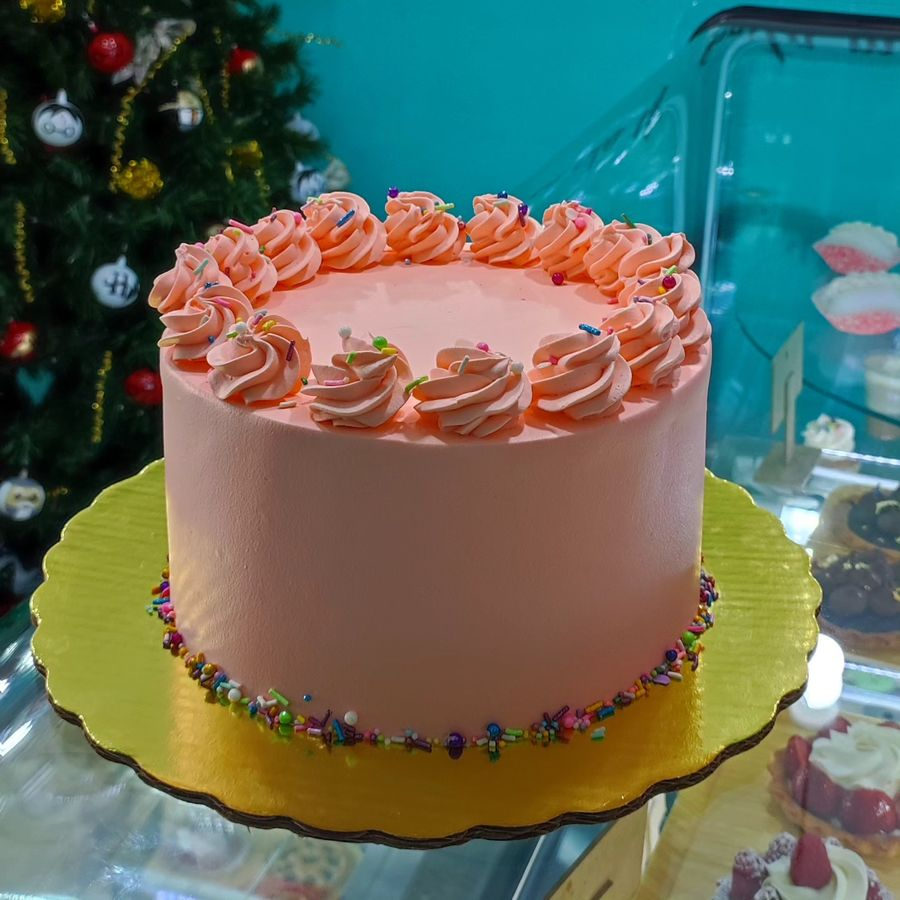
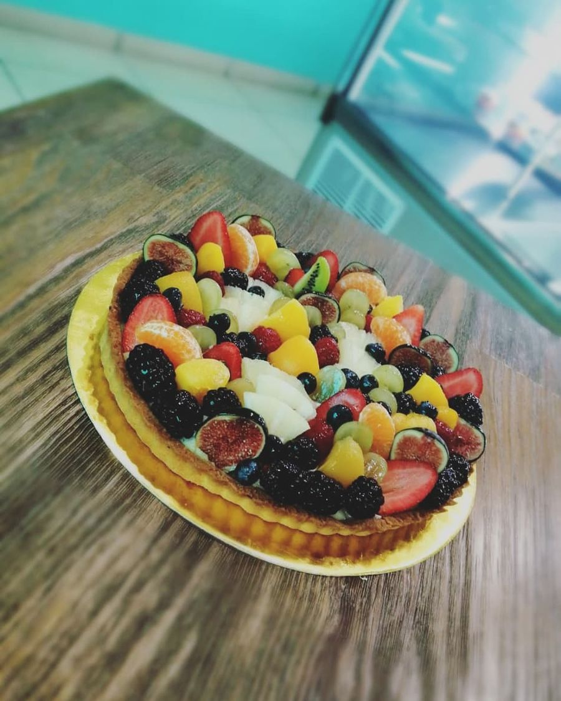

Panadería y repostería · Gustavo A. Madero, CDMX
Tu imaginación es el límite
Pausteles, panes, tartas y cupcakes personalizados, a 2 cuadras del Parque Tepeyac. Si lo puedes imaginar, lo horneamos: no hay imposibles.
Pausteles, panes, tartas y cupcakes personalizados, a 2 cuadras del Parque Tepeyac. Si lo puedes imaginar, lo horneamos: no hay imposibles.
Una pastelería de barrio con vitrina de tartas, café para quedarte y pasteles que se vuelven el centro de la fiesta.
Pasteles y cupcakes personalizados con tu personaje o tema favorito — de videojuegos, anime, películas y más.
Los pedidos se hacen con 8 días de anticipación por WhatsApp, para que tu pastel salga perfecto.
Café, bebidas de temporada y una gran variedad de tartas y postres para disfrutar en nuestras mesas.
Sin precios en línea: cotiza tu pedido por WhatsApp y te atendemos con gusto.
Nuestro producto estrella: pasteles a tu medida, incluyendo pasteles de foto y pasteles de cupcakes para compartir.
PedirCupcakes temáticos para cumpleaños, meses de bebé y cualquier celebración.
PedirTartas de frutas, pastelitos y tartas de temporada — como nuestra tarta de calabaza, por tiempo limitado.
PedirPan dulce y croissants recién horneados en vitrina, todos los días que abrimos.
PedirEn otoño regresa el Pumpkin Spice. Y todo el año, bebidas como el taro que nuestros clientes adoran.
PedirFotos reales de La Paustelería: los pasteles, las tartas y el pan de cada día.




Reseñas reales de clientes, tal como las publicaron.
“Muy amables y amigables… para todos los gustos y van innovando. Yo no perdono una vez a la semana”
“Muy rico el café, gran variedad de postres”
“Me encanta como preparan el brauni”

“10/10 🥰💞 💜Taro”
Reseñas de Google recopiladas por carta.menu (mayo de 2024) y publicación de una clienta en Instagram (abril de 2026).
Lunes: cerrado · Av. Río de Guadalupe 311, San Pedro el Chico, Gustavo A. Madero
Av. Río de Guadalupe 311, Col. San Pedro el Chico, Gustavo A. Madero, CDMX 07480 — a 2 cuadras del Parque Tepeyac, cerca del Metrobús Río de Guadalupe.